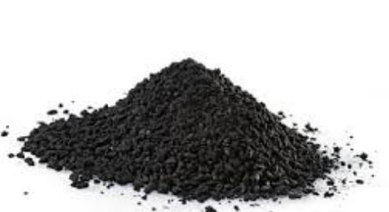
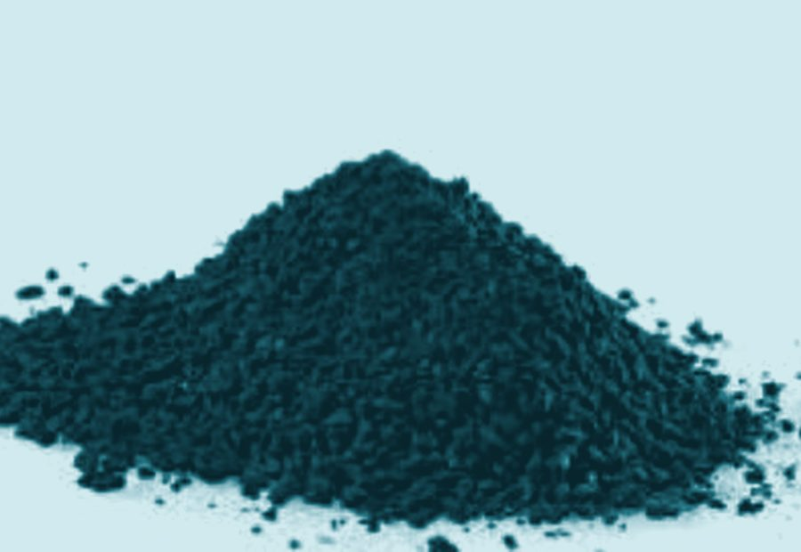

- Home
- Applications
Applications
Where HOK® goes to work.
Every application on this page is drawn from the manufacturer's published documentation. We describe what the product is documented to do — and stop there.
Application 01
Biological wastewater treatment.
Powdered HOK® dosed directly into the biological stage — the classic PAC-in-activated-sludge configuration.
Fine powder added to the aeration basin gives dissolved contaminants and microorganisms a common surface to meet on. The carbon buffers shock loads and inhibiting substances before they reach the biology, adsorbs poorly degradable organics, and acts as a settling aid: sludge flocs formed around carbon particles are denser and settle faster.
- Steadier biology — peaks and toxic shocks are moderated at the surface of the carbon
- Compact, fast-settling sludge — improved separation in the clarifier
- Simple retrofit — dosing equipment is the main addition to an existing plant
Biological stage
Powder grades are dosed into the biological stage and removed with the sludge.

Suspension & fixed bed
Granular grades are packed into fixed beds; powder grades run in stirred suspension.
Application 02
Adsorptive treatment.
For substances that resist biological degradation, adsorption does the work directly.
Two configurations cover most duties. In suspension treatment, powdered carbon is stirred into the stream, loaded, and then separated. In fixed-bed treatment, the stream passes through a packed bed of granulate that is exchanged or regenerated once loaded. The choice depends on contaminant profile, flow, and the separation equipment already on site.
- Suspension — flexible dosing that tracks variable contaminant loads
- Fixed bed — predictable service intervals and simple operation
- Polishing duty — a final adsorptive barrier ahead of discharge
Application 03
Industrial wastewater & landfill leachate.
The demanding end of the spectrum: variable flows, concentrated organics, and streams that change character week to week.
Industrial effluents and landfill leachate frequently carry contaminant loads that a municipal-style biological stage cannot handle alone. HOK® is applied both inside the biological stage (as in the classic configuration) and in dedicated adsorptive stages, where its cost position matters: when carbon consumption is high, the economics of the sorbent decide whether treatment is viable.
- Leachate treatment — a long-documented duty for activated lignite
- Variable loads — dosing adjusts as the stream changes
- Cost-driven duty — high-consumption applications favor a cost-effective sorbent
High-consumption duty
Where consumption is high, the sorbent's cost position matters most.
Filter media
Granular grades serve as filter media in drinking water treatment.
Application 04
Drinking water filtration.
Granular grades as a robust, consistent filter medium.
In drinking water treatment, granular carbon beds remove taste, odor, and dissolved organic compounds. The value of a consistent production process shows here: filter media must behave the same way bed after bed, year after year. Granular HOK® is used where operators want a dependable medium from an industrial-scale, quality-certified source.
- Taste and odor — adsorption of the compounds behind consumer complaints
- Dissolved organics — reduction of organic load ahead of disinfection
- Consistent media — repeatable behavior between filter charges
Application 05
Waste gas & flue gas cleaning.
The duty where HOK® built its industrial reputation.
Injected as a fine powder into gas streams or operated in packed beds, activated lignite separates pollutants — including heavy metals, dioxins, and acidic components — from waste gas and flue gas so operators can meet strict emissions limits. Decades of service in European waste-to-energy and industrial plants stand behind this application, and it is the same family of sorbent duty our parent company Birchtech knows from its clean air business.
- Entrained-flow injection — powder dosed directly into the gas stream
- Packed beds — granulate beds for continuous gas polishing
- Compliance duty — documented service against strict emissions limits

Gas cleaning
Powder injection and packed beds cover the main gas-side configurations.
Your application
Not sure which configuration fits?
Describe your stream, your existing treatment train, and your compliance targets. We'll tell you honestly whether HOK® is worth evaluating — and in which grade and configuration.